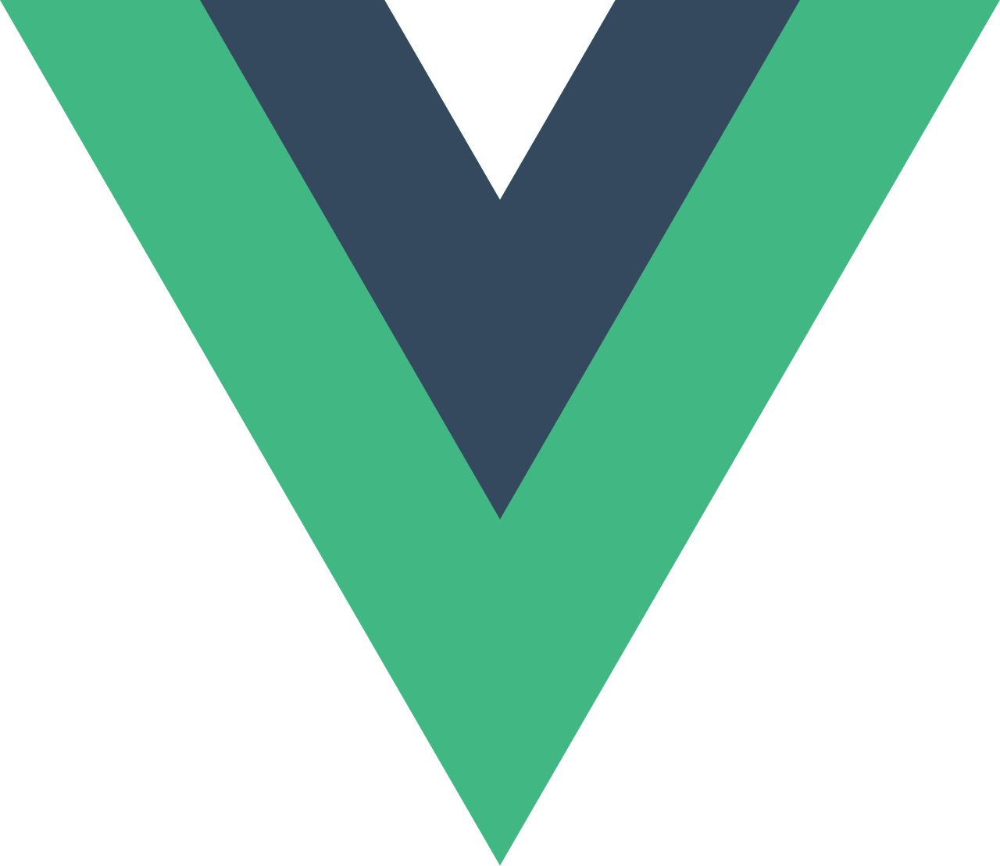
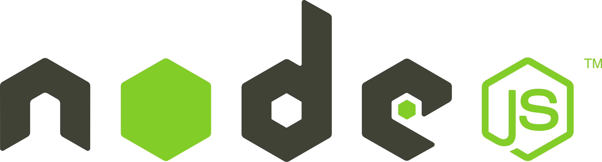
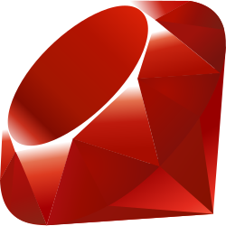
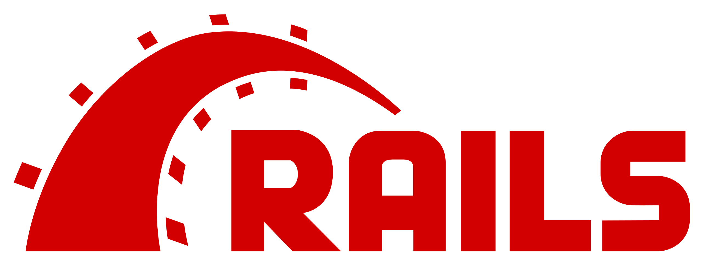
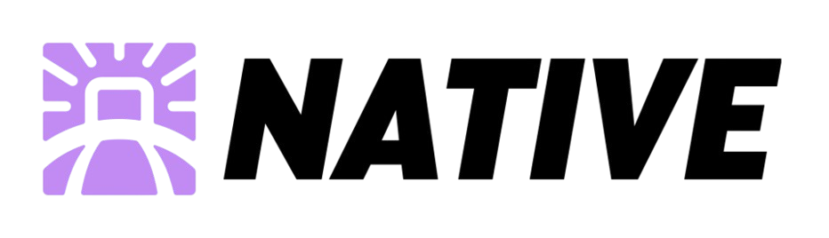
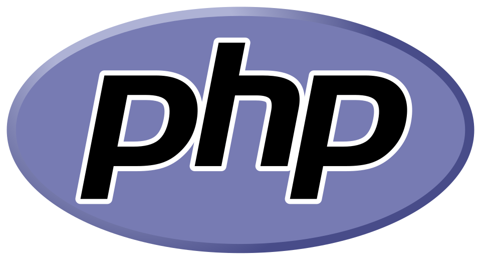
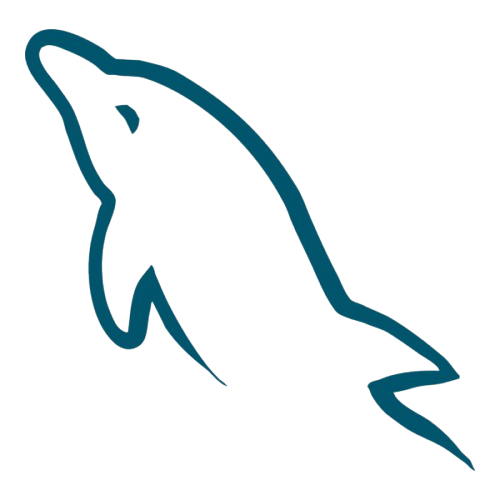

Projekte
Ein kleiner Auszug aus Projekten, an denen ich gearbeitet habe.
jobjournal
Jobjournal entstand im Rahmen meiner Bachelorarbeit an der TH Köln.
Ziel war es, eine Progressive Web App mit Offline-Fähigkeit für ein Unternehmen zu entwickeln, sodass Mitarbeiter auch in Arbeitssituationen ohne Internetverbindung Arbeitspläne verwalten, und geleistete Arbeitszeit eintragen konnten.
Die App ist bis heute erfolgreich im Unternehmen im Einsatz und wird stetig erweitert - so kam seit Abschluss der Bachelorarbeit u.A. ein komplettes Abrechnungssystem mit Anbindung an die Buchhaltung hinzu.
websynth
Ziel meiner Masterarbeit war es, ein System zum kollaborativen Musizieren an Modular-Synthesizern im Web zu entwickeln.
Anhand eines explorativen Forschungs- und Entwicklungsansatzes ist dabei die Web-App websynth entstanden.
Beliebig viele Nutzer können in einer Session gemeinsam an einem synchronisierten Patch arbeiten. Die Web Audio API zeigt dabei, dass Klanggenerierung direkt im Web-Browser möglich ist. Mehr Infos zum Aufbau und zur Architektur des Systems gibt es im Abschlussvideo meiner Masterarbeit zu sehen.
Tech-Stack
Mit diesen Technologien habe ich bisher gearbeitet.
Vue.Js
Node.Js
Ruby
Ruby on Rails
Hotwire Native
PHP
Laravel
MySQL
Über mich
Bildungsweg
2019
Abitur
Städt. Lindengymnasium Gummersbach
09/2019 - 09/2022
Bachelor of Science
Medieninformatik - TH Köln
09/2022 - 08/2024
Master of Science
Medieninformatik - TH Köln
Berufserfahrung
11/2021 - 08/2025
Webentwickler
Kiwis & Brownies
09/2025 - Heute
Webentwickler
Railslove